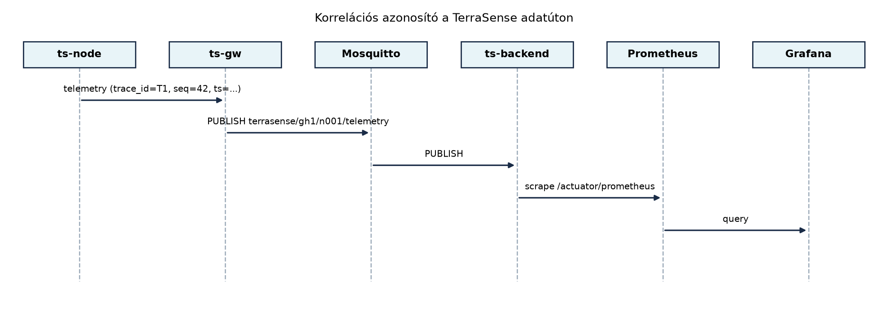

A TerraSense egyetlen hőmérséklet-mérése hosszú utat jár be, mire a
Grafana-dashboardon grafikonként megjelenik: a ts-node
szenzorcsomópont begyűjti, a ts-gw fogadja és MQTT-n
továbbítja, a Mosquitto broker közvetíti, a ts-backend
ingest-szolgáltatása feldolgozza, a TimescaleDB tárolja, végül a Grafana
lekérdezi. Ha a felhasználó azt tapasztalja, hogy a legfrissebb adat
több perce hiányzik, vagy a riasztás nem indult el, akkor az
üzemeltetőnek azt kell eldöntenie, hogy a hibás mérés, az eldugult
gateway, az MQTT-kapcsolat, a backend-kivétel vagy éppen a
dashboard-konfiguráció okozza-e a problémát. A hagyományos, csak helyi
naplófájlokra épülő hibakeresés ilyenkor lassú, mert minden réteget
külön kell megvizsgálni, és a bejegyzések között nincs közös kapocs.
A megfigyelhetőség ezt a szétszabdalt képet rendezi össze:
metrikákkal méri a rendszer viselkedését, strukturált naplókkal rögzíti
az eseményeket, nyomokkal pedig egy-egy tranzakció útját követi végig a
komponenseken. A TerraSense számára a legfontosabb, hogy egy
trace_id korrelációs azonosító már az eszközön
megszülessen, és ugyanaz az azonosító jelenjen meg a gateway, a backend
és a dashboard naplóiban, valamint a nyomok attribútumaiban. Így egy
elakadt mérés esetén nem kell találgatni: a trace_id
alapján azonnal látható, melyik rétegben akadt el az adat.
Definíció. A megfigyelhetőség (observability) az a tulajdonság, amely lehetővé teszi, hogy a rendszer külső jelei – metrikák, naplók és nyomok – alapján megállapítsuk a belső állapotát, és ok-okozati összefüggéseket tárjunk fel anélkül, hogy új kódot kellene hozzáadnunk. A három pillér nem egymás helyettesítője, hanem egymást kiegészítő eszköz.
A metrika egy időben aggregált, numerikus mérőszám, amelyet periodikusan gyűjtünk. Az IoT-rendszerekben két nagy csoportra oszlik: az üzleti metrikákra, például az üzenetkésésre vagy a csomagvesztésre, és az erőforrás-metrikákra, például az akkumulátor-töltöttségre, a szabad heapre vagy a processzor-terhelésre. A metrikák tárolása olcsó, lekérdezésük gyors, ezért alkalmasak riasztási szabályok és dashboardok mögé.
A strukturált napló egy géppel könnyen feldolgozható, sémával
rendelkező eseményrekord, általában JSON formátumban. A TerraSense-ben
minden komponens a timestamp, level,
service, trace_id és message
mezőket kötelezően kiírja; a szabad szöveges üzenet mellett további
mezők is megjelenhetnek, például node_id, seq
vagy mqtt_topic. A napló az egyes események részletes
kontextusát adja, de nagy forgalomnál a tárolása drága, ezért ritkítva,
rotálva és csak a szükséges szinten gyűjtjük.
A nyom (trace) egy tranzakció teljes életútját leíró, hierarchikus
műveletsor. Az OpenTelemetry fogalmi modelljében a trace spanekből áll:
minden span egy-egy egységnyi munkát jelöl, és tartalmazza a művelet
nevét, azonosítóját, időtartamát, az őt kiváltó szülő span azonosítóját,
valamint attribútumokat. A korrelációs azonosító a TerraSense saját, az
OpenTelemetrytől független trace_id mezője, amelyet a
hordozható eszközoldalon is könnyű előállítani. Ez a 64 bites azonosító
nem azonos az OpenTelemetry 128 bites trace ID-jével: a
backendben a saját azonosítót span-attribútumként
(terrasense.trace_id) rögzítjük, míg a szabványos trace
contextet az OpenTelemetry SDK saját, 128 bites azonosítója adja.
Definíció. A korrelációs azonosító (correlation ID,
trace ID) egy egyedi, a tranzakció vagy adatút elején generált
azonosító, amelyet minden érintett komponens változtatás nélkül
továbbvisz, és minden naplóbejegyzésben, nyomattribútumban vagy – ahol a
backend támogatja – exemplarban szerepeltet. A TerraSense
trace_id formátuma 16 karakter hosszú, hexadecimális,
véletlenszerű érték, azaz 64 bit. Metrikacímkének soha nem használjuk,
mert minden üzenethez új idősor tartozna.
A következő ábra egy telemetriaüzenet útját mutatja a
trace_id végigkísérésével:

Az ábrán látható, hogy a ts-node a telemetriaüzenet
trace_id mezőjében generálja az azonosítót, és a
ts-gw valamint a ts-backend ezt nem írja
felül. A backend a trace_id-t a naplóba, az OpenTelemetry
span terrasense.trace_id attribútumába és – ha a registry
támogatja – a hisztogram exemplárjába teszi; metrikacímkébe nem. A
metrikákat a Prometheus rendszeres időközönként lekérdezi a backend
/actuator/prometheus végpontjáról, a Grafana pedig a
Prometheusból olvas.
Nem minden számot érdemes metrikaként gyűjteni, és nem minden eseményt érdemes naplózni. A TerraSense esetében a következő szempontok alapján választunk:
| Döntés | Választás | Indoklás |
|---|---|---|
| Eszközmetrikák közege | Telemetria topic
terrasense/<site>/<node>/telemetry |
Az eszköz nem nyit külön metrika-végpontot; az akkumulátor- és resetszámláló a meglévő mérési sémába kerül. |
| Gateway-metrikák közege | JSON-napló + lokális Prometheus exporter | A gateway erőforrásai korlátozottak, de a naplókat a journald gyűjti; a kritikus üzemi metrikákat a gatewayen futó exporter teszi elérhetővé. |
| Backend-metrikák közege | Micrometer + Prometheus | A Spring Boot Actuator szabványos, konténerben futtatható, és a Prometheus natívan scrape-eli. |
| Korrelációs azonosító helye | trace_id mező a telemetria JSON-ben |
A CoAP és MQTT üzenet is hordozza; a gateway nem értelmezi, csak továbbítja. |
| Nyomkövetés a backendben | OpenTelemetry SDK, OTLP exporter | A backend belépési pontján span nyílik; a saját 64 bites
trace_id a span terrasense.trace_id
attribútuma, a szabványos 128 bites trace ID-t az SDK generálja. |
A metrikák kiválasztásánál kerüljük a túl nagy kardinalitást: a
trace_id-t például soha ne tegyük metrikacímkének, mert
minden méréshez új idősor tartozna, és a Prometheus memóriahasználata
robbanásszerűen nőne. Helyette a naplókban, a nyomokban és az
exemplarokban keressük az egyedi azonosítót. A metrikacímkék csak
alacsony kardinalitású értékeket tartalmazhatnak: site,
node, topic, status. A
node címke kardinalitása a flotta méretével nő, és a
topic is legfeljebb öt értéket vehet fel node-onként, tehát
szintén a flotta méretével skálázódik; több ezer eszköznél érdemes lehet
csak site és topic szerint aggregálni, az
egyedi eszközt pedig exemplarral vagy külön, ritkábban scrape-elt
metrikával megőrizni.
Munkakönyvtár: ~/iot-labor/i062;
előfeltétel a korábbi laborokból a ts-node Zephyr projekt,
a ts-gw szolgáltatás, a ts-backend Maven
projekt és a ~/iot-labor/stack/compose.yaml futó
környezet.
A labor célja, hogy a telemetriaüzenetbe trace_id
kerüljön, a ts-backend késleltetés- és veszteségmetrikát
számoljon, a Prometheus összegyűjtse, a Grafana pedig megjelenítse
azokat.
trace_id mezővelA laborkönyvtárat a korábbi, Monoton óra és sorszám alfejezet Zephyr-projektjéből másoljuk, majd kiegészítjük a megfigyelhetőségi mezőkkel:
mkdir -p ~/iot-labor/i062
cp -r ~/iot-labor/i034 ~/iot-labor/i062/ts-node
cd ~/iot-labor/i062/ts-nodeA korábbi, az Adatformátumok alfejezetben
véglegesített séma kompatibilis módon bővül: az új mezők opcionálisak a
régi kliensek számára, de az új ts-node mindig kitölti
őket. A src/main.c mérési struktúrája és a hozzá tartozó
időkezelés:
#include <zephyr/kernel.h>
#include <zephyr/random/random.h>
#include <stdio.h>
#include <stdint.h>
#include <stddef.h>
struct telemetry {
char site[8]; /* "gh1" */
char node_id[8]; /* "n001" */
uint32_t boot_id; /* bootonként új, pl. 0x3a7f2b1c */
uint32_t seq; /* bootonként 0-tól */
int64_t uptime_ms; /* monoton, boot óta */
int64_t ts; /* epoch ms, csak szinkronizált óra esetén; különben 0 */
char trace_id[17]; /* 16 hex + '\0' */
int16_t temp_mc; /* °C * 100 */
uint16_t rh_pct; /* %RH * 10 */
uint16_t soil_pct; /* % * 10 */
uint32_t reset_count;
uint16_t battery_mv;
};A trace_id generálásához a Zephyr
sys_rand_get API-ját használjuk. A native_sim
és a valós kártya entrópiaforrása eltérő; a buildhez a board által
biztosított entrópia-driver kell
(CONFIG_ENTROPY_GENERATOR=y), és a visszatérési értéket
ellenőrizni kell:
static bool trace_id_generate(char out[17])
{
uint8_t bytes[8];
if (sys_rand_get(bytes, sizeof(bytes)) != 0) {
return false;
}
for (int i = 0; i < 8; i++) {
int b = bytes[i];
out[2 * i] = "0123456789abcdef"[b >> 4];
out[2 * i + 1] = "0123456789abcdef"[b & 0x0f];
}
out[16] = '\0';
return true;
}A sys_rand_get Zephyr 3.7-ben int
visszatérési értéket ad; a 0 a siker. Ha az entrópia még
nem áll rendelkezésre, a függvény hibát jelez, és a hívó a mérést
trace_id nélkül, de a saját seq-ével
továbbíthatja; a correlation azonosító hiánya nem akadályozhatja a mérés
útját.
Az időbélyegek három szintje. A
uptime_ms a k_uptime_get() monoton,
boot-relative értéke, amely intervalumok mérésére és a sorrend
helyreállítására alkalmas. A ts csak akkor epoch ms, ha az
eszköz órája már szinkronizált (SNTP, CoAP time vagy a gateway által
visszaadott idő); szinkron nélkül 0. A gateway a fogadáskor
gw_ts néven saját abszolút epoch ms időbélyeget rendel az
üzenethez, és ha a device ts értéke 0 vagy
érvénytelen, a ts mezőt a gw_ts-ből
normalizálja, ts_source: "gateway" jelöléssel. A
native_sim alatt a host faliórája csak labor-helyettesítő:
a time() használata nem garantált, és az így mért
késleltetés illusztratív, nem hardveres valóság.
A telemetria JSON-je a kanonikus measurements objektumot
használja, és a gateway a trace_id,
reset_count, battery_mv, boot_id
mezőket változtatás nélkül viszi tovább:
{"schema_version":1,"site":"gh1","node_id":"n001","boot_id":"3a7f2b1c",
"seq":42,"ts":1717000000000,"ts_source":"gateway","gw_ts":1717000000123,
"trace_id":"3a7f2b1c9e04d85a",
"measurements":{
"temperature":{"value":23.41,"unit":"Cel","valid":true},
"humidity":{"value":61.2,"unit":"%RH","valid":true},
"soil_moisture":{"value":34.0,"unit":"%","valid":true}},
"reset_count":0,"battery_mv":3200}A mezők útja a teljes láncon:
Firmware (struct telemetry) |
MQTT JSON (TelemetryMessage) |
Backend (Telemetry) |
Felhasználás |
|---|---|---|---|
site, node_id |
site, node_id |
site, nodeId |
címkék és az eszköz kulcsa |
boot_id |
boot_id (hex string) |
bootId |
a seq számláló bootonkénti elkülönítése |
seq |
seq |
seq |
sorrend, duplikátum, hézag |
ts |
ts |
ts |
eseményidő, késleltetés |
uptime_ms |
uptime_ms |
uptimeMs |
eszközoldali intervallum |
trace_id |
trace_id |
traceId |
napló, span-attribútum, exemplar |
temp_mc, rh_pct,
soil_pct |
measurements.* |
tempC, rhPct, soilPct |
üzleti metrikák |
reset_count |
reset_count |
resetCount |
reset counter |
battery_mv |
battery_mv |
batteryMv |
Gauge |
A Zephyr projektet a szokásos paranccsal építjük és futtatjuk:
west build -b native_sim . -d build
./build/zephyr/zephyr.exeVárt kimenet: a konzolon megjelenik a kanonikus JSON, benne a
trace_id minden mérésnél új értékkel. A kimenet
illusztratív; a native_sim időzítése nem hardverhű.
A ts-backend pom.xml-jébe a Micrometer
Prometheus registry és az Actuator függőségei kerülnek. A verziót a
Spring Boot 3.3.4 parent POM kezeli:
<dependency>
<groupId>org.springframework.boot</groupId>
<artifactId>spring-boot-starter-actuator</artifactId>
</dependency>
<dependency>
<groupId>io.micrometer</groupId>
<artifactId>micrometer-registry-prometheus</artifactId>
</dependency>Az application.yml-ben exponáljuk a Prometheus
végpontot, és közös application címkét adunk minden
metrikához:
management:
endpoints:
web:
exposure:
include: health,prometheus
metrics:
tags:
application: ts-backendA kanonikus DTO bővítése. A Ingest alfejezetben megismert
TelemetryMessage rekordot egészítsük ki a megfigyelhetőségi
mezőkkel. A teljes, használható változat
(src/main/java/com/terrasense/backend/TelemetryMessage.java):
package com.terrasense.backend;
import com.fasterxml.jackson.annotation.JsonIgnoreProperties;
import java.util.LinkedHashMap;
import java.util.Map;
@JsonIgnoreProperties(ignoreUnknown = true)
public record TelemetryMessage(
Integer schema_version,
String node_id,
Long seq,
Long ts,
String site,
String boot_id,
Map<String, Measurement> measurements,
Double temperature_c,
Double humidity_rh,
Double soil_moisture_pct,
String trace_id,
Long reset_count,
Integer battery_mv,
Long uptime_ms,
String ts_source,
Long gw_ts) {
public static final int CANONICAL_SCHEMA_VERSION = 1;
public int effectiveSchemaVersion() {
if (schema_version != null) {
return schema_version;
}
return isLegacyFlat() ? 0 : -1;
}
public String effectiveBootId() {
return (boot_id == null || boot_id.isBlank()) ? "boot-0" : boot_id;
}
public boolean isLegacyFlat() {
return (measurements == null || measurements.isEmpty())
&& (temperature_c != null || humidity_rh != null
|| soil_moisture_pct != null);
}
public Map<String, Measurement> normalizedMeasurements() {
if (measurements != null && !measurements.isEmpty()) {
return measurements;
}
Map<String, Measurement> legacy = new LinkedHashMap<>();
if (temperature_c != null) {
legacy.put("temperature", new Measurement(temperature_c, "Cel", true, null));
}
if (humidity_rh != null) {
legacy.put("humidity", new Measurement(humidity_rh, "%RH", true, null));
}
if (soil_moisture_pct != null) {
legacy.put("soil_moisture",
new Measurement(soil_moisture_pct, "%", true, null));
}
return legacy;
}
}A rekord nevei snake_case-ben szerepelnek, mert a JSON is így
hordozza őket; a Jackson a rekordkomponensek nevét közvetlenül leképezi.
A trace_id, reset_count,
battery_mv, uptime_ms, ts_source
és gw_ts hiányozhat a régi klienseknél, ezért
String/Long/Integer típusúak, nem
primitivek. A @JsonIgnoreProperties(ignoreUnknown = true)
miatt a jövőbeli mezők sem okoznak hibát.
A normalizált nézet. A metrikák és a naplózás ne a
nyers MQTT-rekordot használja, hanem egy kis, típusos nézetet
(src/main/java/com/terrasense/backend/Telemetry.java):
package com.terrasense.backend;
import java.util.Map;
public record Telemetry(
String site,
String nodeId,
String bootId,
long seq,
long ts,
String tsSource,
Long gwTs,
long uptimeMs,
String traceId,
double tempC,
double rhPct,
double soilPct,
long resetCount,
int batteryMv) {
public static Telemetry from(String site, TelemetryMessage message) {
Map<String, Measurement> measurements = message.normalizedMeasurements();
return new Telemetry(
site,
message.node_id(),
message.effectiveBootId(),
message.seq() == null ? -1L : message.seq(),
message.ts() == null ? 0L : message.ts(),
message.ts_source() == null ? "unknown" : message.ts_source(),
message.gw_ts(),
message.uptime_ms() == null ? 0L : message.uptime_ms(),
message.trace_id() == null ? "" : message.trace_id(),
value(measurements, "temperature"),
value(measurements, "humidity"),
value(measurements, "soil_moisture"),
message.reset_count() == null ? 0L : message.reset_count(),
message.battery_mv() == null ? 0 : message.battery_mv());
}
private static double value(Map<String, Measurement> measurements, String key) {
Measurement measurement = measurements.get(key);
return measurement == null || measurement.value() == null
? Double.NaN
: measurement.value();
}
}A site értéke a topicból jön
(terrasense/<site>/<node>/telemetry), nem a
payloadból; így a payload site mezőjének eltérését az Ingest: MQTT-ből a backendbe, idempotensen
validációja külön kezeli. A nodeId a payload
node_id értéke (n001), a per-device kulcs
pedig a site és a nodeId párosa.
A sorrend- és hézagkövető. A seq
hézagát nem szabad azonnal végleges veszteségként számolni, mert az MQTT
és a gateway puffere átmenetileg felcserélheti az üzeneteket. A
SeqTracker előzetes hézagot tart nyilván egy 30 másodperces
reorder-ablakig, és csak utána számol végleges veszteséget
(src/main/java/com/terrasense/backend/SeqTracker.java):
package com.terrasense.backend;
import java.util.HashMap;
import java.util.Map;
import java.util.TreeSet;
public final class SeqTracker {
public enum Event { ACCEPTED, DUPLICATE, LATE }
private final long reorderWindowMs;
private final TreeSet<Long> seen = new TreeSet<>();
private final Map<Long, Long> gapFirstSeenMs = new HashMap<>();
private long finalizedThrough = -1;
private long highestSeen = -1;
private boolean initialized;
public SeqTracker(long reorderWindowMs) {
this.reorderWindowMs = reorderWindowMs;
}
public Event onMessage(long seq, long nowMs) {
if (!initialized) {
initialized = true;
finalizedThrough = seq - 1;
}
if (seq <= finalizedThrough) {
return Event.LATE;
}
if (!seen.add(seq)) {
return Event.DUPLICATE;
}
highestSeen = Math.max(highestSeen, seq);
for (long missing = finalizedThrough + 1; missing < highestSeen; missing++) {
if (!seen.contains(missing)) {
gapFirstSeenMs.putIfAbsent(missing, nowMs);
}
}
gapFirstSeenMs.remove(seq);
drainConsecutive();
return Event.ACCEPTED;
}
public long sweep(long nowMs) {
long lost = 0;
while (true) {
Long firstGap = null;
for (Long gap : gapFirstSeenMs.keySet()) {
if (gap > finalizedThrough
&& (firstGap == null || gap < firstGap)) {
firstGap = gap;
}
}
if (firstGap == null
|| nowMs - gapFirstSeenMs.get(firstGap) < reorderWindowMs) {
return lost;
}
lost++;
finalizedThrough = firstGap;
gapFirstSeenMs.remove(firstGap);
drainConsecutive();
}
}
private void drainConsecutive() {
while (seen.remove(finalizedThrough + 1)) {
finalizedThrough++;
}
gapFirstSeenMs.keySet().removeIf(gap -> gap <= finalizedThrough);
}
}Az 1, 3, 2 sorrendben a 3 megérkezésekor a 2 előzetes hézagként kerül
a térképbe, a 2 megérkezésekor viszont kikerül, és a
finalizedThrough 3-ig lép előre; végleges veszteség nem
keletkezik. A sweep() csak a 30 másodperces ablak után
számol végleges veszteséget, a finalizedThrough pedig soha
nem lép vissza. A boot_id váltásakor új tracker indul, így
az eszköz újraindulása nem okoz hamis hézagot.
Az ingest szolgáltatás. A
TelemetryIngestService a trackert, a Timert, a Gauge-ot és
a countereket eszközönként egyszer regisztrálja
(src/main/java/com/terrasense/backend/TelemetryIngestService.java):
package com.terrasense.backend;
import io.micrometer.core.instrument.Counter;
import io.micrometer.core.instrument.Gauge;
import io.micrometer.core.instrument.MeterRegistry;
import io.micrometer.core.instrument.Timer;
import org.slf4j.Logger;
import org.slf4j.LoggerFactory;
import org.slf4j.MDC;
import org.springframework.scheduling.annotation.Scheduled;
import org.springframework.stereotype.Service;
import java.time.Duration;
import java.util.Map;
import java.util.concurrent.ConcurrentHashMap;
import java.util.concurrent.atomic.AtomicInteger;
import java.util.concurrent.atomic.AtomicLong;
@Service
public class TelemetryIngestService {
private static final Logger log =
LoggerFactory.getLogger(TelemetryIngestService.class);
private static final long REORDER_WINDOW_MS = 30_000;
private static final long MAX_LATENCY_MS = Duration.ofHours(24).toMillis();
private final MeterRegistry registry;
private final Map<DeviceKey, Timer> latencyTimers = new ConcurrentHashMap<>();
private final Map<DeviceKey, Counter> resetCounters = new ConcurrentHashMap<>();
private final Map<DeviceKey, AtomicInteger> batteryByDevice =
new ConcurrentHashMap<>();
private final Map<DeviceKey, AtomicLong> resetHighWatermarks =
new ConcurrentHashMap<>();
private final Map<DeviceKey, BootState> seqTrackers = new ConcurrentHashMap<>();
public TelemetryIngestService(MeterRegistry registry) {
this.registry = registry;
}
public void process(Telemetry t) {
DeviceKey key = new DeviceKey(t.site(), t.nodeId());
long now = System.currentTimeMillis();
if (t.ts() > 0 && now >= t.ts() && now - t.ts() <= MAX_LATENCY_MS) {
latencyTimer(key).record(Duration.ofMillis(now - t.ts()));
} else {
counter("terrasense.telemetry.time_invalid", key).increment();
}
SeqTracker.Event event = seqTracker(key, t.bootId())
.onMessage(t.seq(), now);
if (event == SeqTracker.Event.LATE) {
counter("terrasense.telemetry.late", key).increment();
} else if (event == SeqTracker.Event.DUPLICATE) {
counter("terrasense.telemetry.duplicate", key).increment();
}
updateResetCounter(key, t.resetCount());
batteryGauge(key).set(t.batteryMv());
MDC.put("trace_id", t.traceId());
try {
log.info("telemetry ingested: node_id={}, seq={}, trace_id={}, latency_ms={}",
t.nodeId(), t.seq(), t.traceId(),
t.ts() > 0 ? now - t.ts() : null);
} finally {
MDC.remove("trace_id");
}
}
@Scheduled(fixedDelay = 5000)
public void sweepSequenceGaps() {
long now = System.currentTimeMillis();
seqTrackers.forEach((key, state) -> {
long lost = state.tracker().sweep(now);
if (lost > 0) {
missingCounter(key).increment(lost);
}
});
}
private Timer latencyTimer(DeviceKey key) {
return latencyTimers.computeIfAbsent(key, k ->
Timer.builder("terrasense.telemetry.latency")
.description("Eseményidő és backend-fogadás közötti késleltetés")
.tags("site", k.site(), "node", k.node())
.serviceLevelObjectives(
Duration.ofMillis(25), Duration.ofMillis(50),
Duration.ofMillis(100), Duration.ofMillis(200),
Duration.ofMillis(500), Duration.ofSeconds(1),
Duration.ofSeconds(2), Duration.ofSeconds(5),
Duration.ofSeconds(10), Duration.ofSeconds(30))
.register(registry));
}
private Counter missingCounter(DeviceKey key) {
return counter("terrasense.telemetry.missing", key);
}
private Counter counter(String name, DeviceKey key) {
return registry.counter(name, "site", key.site(), "node", key.node());
}
private void updateResetCounter(DeviceKey key, long resetCount) {
AtomicLong high = resetHighWatermarks.computeIfAbsent(
key, k -> new AtomicLong(resetCount));
long previous = high.getAndUpdate(old -> Math.max(old, resetCount));
if (resetCount > previous) {
resetCounters.computeIfAbsent(key, k ->
Counter.builder("terrasense.device.reset")
.description("Eszköz újraindulások száma")
.tags("site", k.site(), "node", k.node())
.register(registry))
.increment(resetCount - previous);
}
}
private AtomicInteger batteryGauge(DeviceKey key) {
return batteryByDevice.computeIfAbsent(key, k -> {
AtomicInteger value = new AtomicInteger();
Gauge.builder("terrasense.device.battery_mv", value, AtomicInteger::get)
.description("Legutóbbi mért akkumulátorfeszültség millivoltban")
.tags("site", k.site(), "node", k.node())
.register(registry);
return value;
});
}
private SeqTracker seqTracker(DeviceKey key, String bootId) {
return seqTrackers.compute(key, (k, old) -> {
if (old == null || !old.bootId().equals(bootId)) {
return new BootState(bootId, new SeqTracker(REORDER_WINDOW_MS));
}
return old;
}).tracker();
}
private record DeviceKey(String site, String node) {}
private record BootState(String bootId, SeqTracker tracker) {}
}A Timer beállításánál szándékosan a
serviceLevelObjectives szerepel a
publishPercentiles helyett. A
publishPercentiles(0.5, 0.95, 0.99) kliensoldali, előre
kiszámított percentiliseket exportál, amelyekből a Prometheus
histogram_quantile függvénye nem tud dolgozni; a
_bucket idősorokhoz histogram-konfiguráció kell. A
serviceLevelObjectives a megadott 10 határral pontosan azt
a 10 véges bucketet adja, amelyet a számolási feladat használ; a
Prometheus ezen felül a +Inf bucketet, valamint a
_sum és _count sorokat is exportálja. A Timer
neve ponttal tagolt (terrasense.telemetry.latency), a
Prometheus registry ebből
terrasense_telemetry_latency_seconds_bucket néven
másodperc-alapú _bucket sorokat készít. A
terrasense:telemetry_latency_p95_ms recording rule ezért a
histogram_quantile eredményét 1000-rel szorozza, és a panel
már milliszekundumban kapja az értéket; a
histogram_quantile bemenete továbbra is a másodpercben
exportált _bucket idősor.
A Gauge-nál a batteryByDevice térkép tartja erős
referencián az AtomicInteger-t, ezért a Micrometer gyenge
referenciája nem engedi a GC-nak eltüntetni az értéket. A Gauge-ot
eszközönként csak egyszer regisztráljuk; a későbbi minták ugyanazt az
AtomicInteger példányt frissítik set()-tel. A
reset_count high watermarkja AtomicLong-ban
él, így a counter csak a tényleges növekedést számolja, és a visszaálló
vagy hiányzó érték nem csökkenti a számlálót.
A sorrendkövető állapota mémoire-ben van; a backend újraindulásakor
az első üzenet inicializálja a finalizedThrough értéket,
ezért az újraindulás nem okoz hamis veszteséget. A leállás alatt
ténylegesen elveszett üzeneteket ez a memoria nem tudja visszamenőleg
azonosítani; ha erre is szükség van, a finalizedThrough
értékét a telemetry táblából kell inicializálni.
A ~/iot-labor/stack/compose.yaml-ben a
ts-backend és a Prometheus ugyanarra a
terrasense hálózatra kerül. A meglévő
ts-backend szolgáltatás alá vedd fel a
networks sort, majd add hozzá a Prometheus szolgáltatást és
a hálózat definícióját:
services:
ts-backend:
# ... a korábbi beállítások változatlanok ...
networks: [terrasense]
prometheus:
image: prom/prometheus:v2.53.0
container_name: lab-prometheus
ports:
- "9090:9090"
volumes:
- ./prometheus/prometheus.yml:/etc/prometheus/prometheus.yml:ro
- ./prometheus/rules.yml:/etc/prometheus/rules.yml:ro
- prometheus_data:/prometheus
command:
- --config.file=/etc/prometheus/prometheus.yml
- --storage.tsdb.retention.time=15d
depends_on:
- ts-backend
networks: [terrasense]
volumes:
prometheus_data:
networks:
terrasense:
name: terrasenseA ~/iot-labor/stack/prometheus/prometheus.yml fájl
tartalma:
global:
scrape_interval: 15s
evaluation_interval: 15s
external_labels:
network: terrasense
environment: lab
rule_files:
- /etc/prometheus/rules.yml
scrape_configs:
- job_name: 'ts-backend'
metrics_path: '/actuator/prometheus'
static_configs:
- targets: ['ts-backend:8080']
labels:
component: 'ts-backend'
network: 'terrasense'A ts-backend konténer a Compose hálózaton
ts-backend néven érhető el, a Prometheus ugyanazon a
hálózaton fut, ezért a ts-backend:8080 cél névfeloldása
működik. Ha a stackben a backend szolgáltatás neve eltér, a
targets értékét kell hozzá igazítani.
A dashboard két panelje nem a nyers, hosszú metrikanevet tartalmazó
PromQL-t futtatja közvetlenül, hanem recording rule-t olvas. A
szabályfájl a ~/iot-labor/stack/prometheus/rules.yml:
groups:
- name: terrasense-dashboard
interval: 15s
rules:
- record: terrasense:telemetry_latency_p95_ms
expr: >-
histogram_quantile(0.95,
sum by (le, site, node) (
rate(terrasense_telemetry_latency_seconds_bucket[5m])))
* 1000
- record: terrasense:device_reset_increase_5m
expr: >-
sum by (site, node) (
increase(terrasense_device_reset_total[5m]))A terrasense:telemetry_latency_p95_ms szabály a
másodpercben exportált _bucket sorokból számol, majd
1000-rel szoroz, ezért az eredmény már milliszekundum. A
terrasense:device_reset_increase_5m az elmúlt 5 perc
reset-növekményét adja. A Prometheus a szabályokat az
evaluation_interval szerint, itt 15 másodpercenként
értékeli; a dashboard a felvett idősorokat olvassa. Ha a
rules.yml hiányzik vagy hibás, a nyers metrikák megvannak,
de a két panel üres marad.
A Grafana a Prometheus adatforrást és a dashboardot is
provisioningból kapja, kézi importálás nélkül. A
~/iot-labor/stack/grafana/provisioning/datasources/prometheus.yml
fájl:
apiVersion: 1
datasources:
- name: Prometheus
uid: terrasense-prometheus
type: prometheus
access: proxy
url: http://prometheus:9090
isDefault: true
editable: falseA
~/iot-labor/stack/grafana/provisioning/dashboards/terrasense.yml
provider:
apiVersion: 1
providers:
- name: 'TerraSense Observability'
orgId: 1
folder: 'TerraSense'
type: file
disableDeletion: false
updateIntervalSeconds: 30
allowUiUpdates: false
options:
path: /var/lib/grafana/dashboards
foldersFromFilesStructure: falseA Grafana szolgáltatásnak mindkét provisioning-könyvtárat és a
dashboardfájlt tartalmazó könyvtárat mountolnia kell. A meglévő
lab-grafana szolgáltatás volumes
listájához:
volumes:
- ./grafana/provisioning:/etc/grafana/provisioning:ro
- ./grafana/dashboards:/var/lib/grafana/dashboards:ro
- grafana_data:/var/lib/grafana
networks: [terrasense]A
~/iot-labor/stack/grafana/dashboards/terrasense-observability.json
teljes dashboardja négy panelt tartalmaz. A datasource UID
megegyezik a fenti terrasense-prometheus értékkel, a
panelek gridPos mezője 2×2 elrendezést ad:
{
"annotations": {"list": []},
"editable": false,
"fiscalYearStartMonth": 0,
"graphTooltip": 1,
"id": null,
"links": [],
"panels": [
{
"datasource": {"type": "prometheus", "uid": "terrasense-prometheus"},
"fieldConfig": {
"defaults": {
"color": {"mode": "palette-classic"},
"custom": {
"axisCenteredZero": false,
"axisColorMode": "text",
"axisLabel": "",
"axisPlacement": "auto",
"barAlignment": 0,
"drawStyle": "line",
"fillOpacity": 10,
"gradientMode": "none",
"hideFrom": {"legend": false, "tooltip": false, "viz": false},
"insertNulls": false,
"lineInterpolation": "linear",
"lineWidth": 1,
"pointSize": 5,
"scaleDistribution": {"type": "linear"},
"showPoints": "never",
"spanNulls": false,
"stacking": {"group": "A", "mode": "none"},
"thresholdsStyle": {"mode": "off"}
},
"mappings": [],
"thresholds": {
"mode": "absolute",
"steps": [{"color": "green", "value": null}]
},
"unit": "ms"
},
"overrides": []
},
"gridPos": {"h": 8, "w": 12, "x": 0, "y": 0},
"id": 1,
"options": {
"legend": {
"calcs": [],
"displayMode": "list",
"placement": "bottom",
"showLegend": true
},
"tooltip": {"mode": "multi", "sort": "desc"}
},
"targets": [
{
"datasource": {"type": "prometheus", "uid": "terrasense-prometheus"},
"editorMode": "code",
"expr": "terrasense:telemetry_latency_p95_ms",
"legendFormat": "{{site}}/{{node}}",
"range": true,
"refId": "A"
}
],
"title": "Telemetry feldolgozási késleltetés (p95)",
"type": "timeseries"
},
{
"datasource": {"type": "prometheus", "uid": "terrasense-prometheus"},
"fieldConfig": {
"defaults": {
"color": {"mode": "palette-classic"},
"custom": {
"axisCenteredZero": false,
"axisColorMode": "text",
"axisLabel": "",
"axisPlacement": "auto",
"barAlignment": 0,
"drawStyle": "line",
"fillOpacity": 10,
"gradientMode": "none",
"hideFrom": {"legend": false, "tooltip": false, "viz": false},
"insertNulls": false,
"lineInterpolation": "linear",
"lineWidth": 1,
"pointSize": 5,
"scaleDistribution": {"type": "linear"},
"showPoints": "never",
"spanNulls": false,
"stacking": {"group": "A", "mode": "none"},
"thresholdsStyle": {"mode": "off"}
},
"mappings": [],
"thresholds": {
"mode": "absolute",
"steps": [{"color": "green", "value": null}]
},
"unit": "short"
},
"overrides": []
},
"gridPos": {"h": 8, "w": 12, "x": 12, "y": 0},
"id": 2,
"options": {
"legend": {
"calcs": [],
"displayMode": "list",
"placement": "bottom",
"showLegend": true
},
"tooltip": {"mode": "multi", "sort": "desc"}
},
"targets": [
{
"datasource": {"type": "prometheus", "uid": "terrasense-prometheus"},
"editorMode": "code",
"expr": "sum by (site, node) (rate(terrasense_telemetry_missing_total[5m]))",
"legendFormat": "{{site}}/{{node}}",
"range": true,
"refId": "A"
}
],
"title": "Véglegesen hiányzó üzenetek (db/s)",
"type": "timeseries"
},
{
"datasource": {"type": "prometheus", "uid": "terrasense-prometheus"},
"fieldConfig": {
"defaults": {
"color": {"mode": "palette-classic"},
"custom": {
"axisCenteredZero": false,
"axisColorMode": "text",
"axisLabel": "",
"axisPlacement": "auto",
"barAlignment": 0,
"drawStyle": "bars",
"fillOpacity": 20,
"gradientMode": "none",
"hideFrom": {"legend": false, "tooltip": false, "viz": false},
"insertNulls": false,
"lineInterpolation": "linear",
"lineWidth": 1,
"pointSize": 5,
"scaleDistribution": {"type": "linear"},
"showPoints": "never",
"spanNulls": false,
"stacking": {"group": "A", "mode": "none"},
"thresholdsStyle": {"mode": "off"}
},
"mappings": [],
"thresholds": {
"mode": "absolute",
"steps": [{"color": "green", "value": null}]
},
"unit": "short"
},
"overrides": []
},
"gridPos": {"h": 8, "w": 12, "x": 0, "y": 8},
"id": 3,
"options": {
"legend": {
"calcs": [],
"displayMode": "list",
"placement": "bottom",
"showLegend": true
},
"tooltip": {"mode": "multi", "sort": "desc"}
},
"targets": [
{
"datasource": {"type": "prometheus", "uid": "terrasense-prometheus"},
"editorMode": "code",
"expr": "terrasense:device_reset_increase_5m",
"legendFormat": "{{site}}/{{node}}",
"range": true,
"refId": "A"
}
],
"title": "Eszköz-resetek (5 perces növekmény)",
"type": "timeseries"
},
{
"datasource": {"type": "prometheus", "uid": "terrasense-prometheus"},
"fieldConfig": {
"defaults": {
"color": {"mode": "palette-classic"},
"custom": {
"axisCenteredZero": false,
"axisColorMode": "text",
"axisLabel": "",
"axisPlacement": "auto",
"barAlignment": 0,
"drawStyle": "line",
"fillOpacity": 10,
"gradientMode": "none",
"hideFrom": {"legend": false, "tooltip": false, "viz": false},
"insertNulls": false,
"lineInterpolation": "linear",
"lineWidth": 1,
"pointSize": 5,
"scaleDistribution": {"type": "linear"},
"showPoints": "never",
"spanNulls": false,
"stacking": {"group": "A", "mode": "none"},
"thresholdsStyle": {"mode": "off"}
},
"mappings": [],
"thresholds": {
"mode": "absolute",
"steps": [{"color": "green", "value": null}]
},
"unit": "mvolt"
},
"overrides": []
},
"gridPos": {"h": 8, "w": 12, "x": 12, "y": 8},
"id": 4,
"options": {
"legend": {
"calcs": [],
"displayMode": "list",
"placement": "bottom",
"showLegend": true
},
"tooltip": {"mode": "multi", "sort": "desc"}
},
"targets": [
{
"datasource": {"type": "prometheus", "uid": "terrasense-prometheus"},
"editorMode": "code",
"expr": "terrasense_device_battery_mv",
"legendFormat": "{{site}}/{{node}}",
"range": true,
"refId": "A"
}
],
"title": "Akkumulátorfeszültség (mV)",
"type": "timeseries"
}
],
"refresh": "30s",
"schemaVersion": 39,
"tags": ["terrasense", "observability"],
"templating": {"list": []},
"time": {"from": "now-1h", "to": "now"},
"timepicker": {},
"timezone": "utc",
"title": "TerraSense Observability",
"uid": "terrasense-observability",
"version": 1
}A dashboard JSON uid mezője
terrasense-observability, a datasource UID
terrasense-prometheus; a kettőnek a provisioning fájlokkal
egyeznie kell. A dashboardfájlt a
~/iot-labor/stack/grafana/dashboards/ könyvtárba kell
tenni, és a Grafana konténernek ugyanerre a könyvtárra kell mountolnia.
A betöltéshez nem kell kézi import: a
docker compose restart lab-grafana után a provider 30
másodpercen belül betölti a fájlt.
Indítsuk el a teljes stacket:
cd ~/iot-labor/stack
docker compose up -dIndítsuk el a ts-node szimulátort és a
ts-gw-t a korábbi laborok utasításai szerint. Ezután a
Prometheus lekérdezésével ellenőrizzük, hogy a metrikák megérkeztek:
curl 'http://localhost:9090/api/v1/query?query=terrasense_telemetry_latency_seconds_count'Várt kimenet: a válasz status mezője
success, a data.result pedig legalább egy
olyan sort tartalmaz, amelynek value mezője nullától
nagyobb. A pontos szám a feldolgozott üzenetektől függ, ezért a könyv
nem ad konkrét értéket. A _bucket sorok jelenlétét külön
ellenőrizzük:
curl 'http://localhost:9090/api/v1/query?query=terrasense_telemetry_latency_seconds_bucket'A válaszban a le címke értékei között meg kell jelennie
a tíz beállított SLO-határnak és a +Inf-nek. A Grafana
http://localhost:3000 címen a
TerraSense Observability dashboardon a késleltetés és a
veszteség grafikonja jelenik meg; a dashboardot nem kell kézzel
importálni.
A megfigyelhetőségi lánc ellenőrzése rétegenként történik:
ts-node konzolján minden
mérés JSON-je tartalmazza a trace_id mezőt, és az érték
mérésenként változik.journalctl -u ts-gw -f
naplóban a trace_id mező megegyezik az eszköz által
kiírttal.mosquitto_sub -t 'terrasense/#' -v parancs kimenetén a
JSON-ben látszik a trace_id./actuator/prometheus
végpont visszaadja a
terrasense_telemetry_latency_seconds_count metrikát és a
terrasense_telemetry_latency_seconds_bucket sorokat.http://localhost:9090/targets oldalon a
ts-backend target állapota UP, és a legutóbbi scrape
sikeres.| Hibatünet | Lehetséges ok | Javítás |
|---|---|---|
| A Prometheus target DOWN | A ts-backend konténer nem fut, vagy a
metrics_path hibás. |
Ellenőrizzük a docker compose ps kimenetét és a
curl-t a backend /actuator/health
végpontjára. |
| A metrika értéke nulla | Nincs bejövő MQTT-üzenet, vagy az ingest nem hívódik meg. | Nézzük a backend naplóját; mosquitto_sub-bel
ellenőrizzük a topicot. |
| A késleltetés értéke negatív vagy irreálisan nagy | Az eszköz ts mezője nem szinkronizált, vagy a gateway
nem normalizálta a gw_ts-ből. |
Ellenőrizzük a ts_source mezőt; szinkron nélkül a
gatewaynek kell a ts-t a gw_ts-ből kitöltenie.
A time_invalid counter növekedése erre utal. |
| A dashboard nem frissül | A Grafana provisioning path nem megfelelő, vagy a datasource UID hibás. | Ellenőrizzük a provisioning YAML-t és a dashboard JSON
datasource mezőjét. |
Helyi idő, uptime és szinkronizált epoch
összekeverése. A ts-node uptime_ms
értéke monoton, de nem epoch idő; a native_sim host
faliórája labor-helyettesítő, nem az eszköz garantált órája. A
ts csak szinkronizált eszközóra esetén epoch ms; egyébként
a gatewaynek kell a gw_ts-ből normalizálnia. A backend a
negatív vagy 24 óránál nagyobb késleltetést ne rögzítse, hanem
time_invalid counterrel jelezze.
Korrelációs azonosító hiánya a gateway
naplójában. Sok fejlesztő a trace_id-t csak a
backendben generálja, így az eszköz és a gateway naplóit nem lehet
összekötni. A trace_id-t már az eszközön elő kell állítani,
és a gatewaynek átlátszóan tovább kell vinnie.
Magas kardinalitású metrikacímke. A
trace_id-t vagy a ts-t metrikacímkének
használva minden üzenet új idősor keletkezik, ami a Prometheus
memóriáját percek alatt kimeríti. A korrelációs azonosító a naplóba, a
nyomattribútumba és az exemplarba való, nem a metrikacímkébe.
OpenTelemetry és saját trace_id
kettőssége. A saját trace_id 64 bites, az
OpenTelemetry trace ID 128 bites. A saját azonosítót nem szabad a
szabványos trace ID helyére tenni; a helyes megoldás a
terrasense.trace_id span-attribútum, miközben az SDK saját
128 bites trace contextet generál. Így a napló és a nyom
összekapcsolható anélkül, hogy a szabványos kontextus érvénytelenné
válna.
A seq hézag azonnali veszteségként
kezelése. Az MQTT és a gateway puffere átmenetileg
felcserélheti az üzeneteket; a 3-as előtt érkező 2-es még nem veszett
el. Csak egy reorder-ablak után, eszköz- és bootazonosító szerint
elkülönített számlálóval szabad végleges veszteséget számolni. A
finalizedThrough értéke soha nem léphet vissza.
publishPercentiles használata
_bucket helyett. A publishPercentiles
kliensoldali percentiliseket exportál, amelyekből a Prometheus
histogram_quantile nem tud dolgozni. A p95-höz
histogram-konfiguráció kell (serviceLevelObjectives vagy
publishPercentileHistogram), és a panelen a másodpercben
exportált értéket kell milliszekundumra váltani.
Fogalmi/döntési kérdés. Magyarázd el, miért nem alkalmas a naplózás önmagában a TerraSense késleltetésének folyamatos megfigyelésére, és miért jobb erre a metrika. Milyen esetben van szükség mégis a naplóra?
Számolási/tervezési feladat. A
ts-node percenként 12 telemetriaüzenetet küld. A Prometheus
15 másodpercenként scrape-el. A
terrasense.telemetry.latency Timerhez 10 véges SLO-bucket
tartozik, site-onként 100 node-dal, összesen 5 site-on. (a) Hány aktív
idősora van a hisztogramnak (bucketek, +Inf,
_sum, _count)? (b) Mennyi a 30 napos
scrape-minták száma? (c) Becsüld meg a lemezigenyet 1,5 B/minta
tömörítéssel, és hasonlítsd össze a 6500 aktív sor 2 kB/soros
head-memóriájával! (d) Miért nem érdemes a trace_id-t
címkének tenni?
Implementációs feladat. Egészítsd ki a
ts-gw naplózását úgy, hogy az MQTT-publikáláskor a napló
JSON-jében szerepeljen a trace_id mező, amelyet a bejövő
UDP-csomag JSON-jéből olvas ki. A gatewaynek nem kell értelmeznie a
mezőt, csak továbbítania.
Hibakeresési/kiterjesztési feladat. A Grafana
dashboardon a terrasense_telemetry_missing_total counter
értéke folyamatosan nő, pedig a ts-node minden üzenetet
elküld. Hol lehet a hiba? Javasolj legalább két lehetséges okot és a
hozzájuk tartozó ellenőrzési lépést.
A naplózás minden egyes eseményt rögzít, de nincs időbeli
aggregációja; a késleltetés folyamatos méréséhez hisztogram kell,
amelyből percentilisek számíthatók. A napló akkor kell, ha egy konkrét
mérés útját akarjuk visszafejteni a trace_id alapján, mert
ott az egyedi kontextus (például a gateway sorhossza vagy a backend
kivétel stack trace-e) megtalálható.
+Inf együtt 11
le idősor; ezekhez jön a _sum és a
_count, tehát node-onként 13 idősor. 5 site × 100 node =
500 node, így 500 × 13 = 6500 aktív idősor. (A Micrometer egyes verziói
_max sort is exportálhatnak; a pontos darabszámot a scrape
kimenetén kell ellenőrizni. A feladat a 13 sorral számol.)15 másodperces scrape esetén percenként 4 minta készül. 30 nap = 30 × 24 × 60 = 43 200 perc, ezért egy idősor 43 200 × 4 = 172 800 mintát kap. A 6500 idősor összesen 6500 × 172 800 = 1 123 200 000 ≈ 1,12 milliárd minta 30 nap alatt.
A 6500 aktív sor head-memóriája 6500 × 2 kB = 13 MB; ez csak az aktív sorok fejében tárolt metaadat, nem a havi adat, és nem tartalmazza az indexet, a WAL-t és a blokkokat. A 30 napos lemezigeny 1,5 B/minta becsléssel 1,12 × 10^9 × 1,5 B ≈ 1,68 GB; 2 B/mintával ≈ 2,25 GB. A 15 napos retention ezt nagyjából felére csökkenti, az index és a WAL külön költség. A két számot tehát külön kell kezelni: a 13 MB a head-memória, a GB-os nagyságrend a lemez.
A trace_id címkeként minden üzenethez új idősor
keletkezne: 500 node × 12 üzenet/perc × 43 200 perc = 259 200 000 új
idősor 30 nap alatt. Ezek a sorok nem tűnnek el a scrape után, hanem a
Prometheus head blokkjában és indexében maradnak, így a kardinalitás
néhány nap alatt kezelhetetlenné válik. A trace_id helye a
napló, a span-attribútum és az exemplar.
ts-gw C++ kódjában a JSON-feldolgozó könyvtár
(például nlohmann::json) segítségével olvassuk ki a
trace_id mezőt, normalizáljuk a ts-t, és a
naplózóban is írjuk ki:#include <chrono>
#include <string>
#include <nlohmann/json.hpp>
static long long now_epoch_ms() {
using namespace std::chrono;
return duration_cast<milliseconds>(
system_clock::now().time_since_epoch()).count();
}
void publish_to_mqtt(const std::string& topic, const std::string& payload) {
auto j = nlohmann::json::parse(payload);
std::string trace_id = j.value("trace_id", "");
long long ts = j.value("ts", 0LL);
if (ts <= 0) {
j["ts"] = now_epoch_ms();
j["ts_source"] = "gateway";
} else {
j["ts_source"] = "device";
}
j["gw_ts"] = now_epoch_ms();
logger.info("mqtt_publish", {{"topic", topic}, {"trace_id", trace_id}});
mqtt_client.publish(topic, j.dump());
}A gateway a trace_id-t nem értelmezi, csak továbbítja; a
ts normalizálása és a gw_ts hozzáadása az
időkezelési szerződés része. A system_clock a gateway
NTP-szinkronizált óráját használja, nem a ts-node
uptime-ját.
terrasense_telemetry_missing_total counter növekedése
azt jelenti, hogy a SeqTracker a reorder-ablak után
véglegesen hiányzó üzenetet látott. Lehetséges okok és ellenőrzések:
ts-node és a
ts-gw között. A gateway udp_rx_total
értéke elmarad a ts-node által küldött
seq-ektől. Ellenőrzés: a gateway naplójában a
seq-ek és az UDP-csomagok száma; a
terrasense_telemetry_late_total és
duplicate_total alakulása.boot_id nem változik újrainduláskor.
Ha az eszköz újraindul, de ugyanazt a boot_id-t küldi, a
seq 0-tól indulása hamis hézagot okoz. Ellenőrzés: a
payload boot_id mezője és a reset_count
növekedése; a boot_id-nek bootonként újnak kell
lennie.seq a finalizedThrough
alá esik, ezért late_total nő, nem
missing_total. Ellenőrzés: a gateway pufferének hossza és a
gw_ts/ts különbség.n001 node-ja
összekeveredik. Ellenőrzés: a DeviceKey(site, node)
használata és a Prometheus site/node
címkéi.telemetry tábla utolsó
seq értéke.A TerraSense megfigyelhetősége három pilléren nyugszik: metrikákon,
strukturált naplókon és nyomokon. A trace_id korrelációs
azonosítót már a ts-node generálja, a ts-gw és
a ts-backend változtatás nélkül továbbviszi, és a
naplókban, valamint a terrasense.trace_id
span-attribútumban szerepelteti; metrikacímkébe nem kerül. A backend
Micrometerrel és Prometheus registryvel méri az eseményidő és a
backend-fogadás közötti késleltetést
(terrasense.telemetry.latency, másodpercben exportált
_bucket sorokkal), a seq reorder-ablak utáni
végleges veszteségét (terrasense.telemetry.missing), az
eszköz-reseteket (terrasense.device.reset) és az
akkumulátor-feszültséget (terrasense.device.battery_mv). Az
időkezelés három szintje külön szerepel: a ts-node monoton
uptime-ja, a gateway által normalizált abszolút
ts/gw_ts, és a backend
server_ts-e. A Prometheus a
/actuator/prometheus végpontról scrape-el, a Grafana pedig
a provisioningból betöltött terrasense-observability.json
dashboardon jeleníti meg a p95 késleltetést és a hibamutatókat.
Továbbvitt eredmény. A trace_id mező, a
másodperc-alapú terrasense_telemetry_latency_seconds
hisztogram, a terrasense_telemetry_missing_total counter, a
boot_id szerinti seq-követés és a Grafana-dashboard
konvenciója az Tesztelési szintek alfejezet
integrációs tesztjeiben, valamint a Záróprojekt
átvételi méréseiben használandó.
trace_id és a
szabványos 128 bites trace ID megkülönböztetése ebben a fejezetben
tudatos tervezési döntés.Timer, a serviceLevelObjectives, a
publishPercentileHistogram és a
publishPercentiles szemantikája itt dokumentált; a
_bucket exportot a labor scrape-kimenetén kell
ellenőrizni._seconds utótag, a
_bucket/_sum/_count sorok és a
histogram_quantile szintaxisa stabil, de a konkrét bucketek
a Timer konfigurációjától függenek.sys_rand_get: a
https://docs.zephyrproject.org/3.7.0/ dokumentációban ellenőrizendő a
native_sim és a választott kártya entrópiaforrása. A
CONFIG_ENTROPY_GENERATOR=y önmagában nem garantál működő
drivert; a build és a boot alatti entrópiaállapot ellenőrzése
szükséges.